Complex Numbers are an extension of the real number systems and are important especially to engineering. They may be first encountered in algebra as the non-real roots of quadratic equations, or in differential equations as non-real solutions. A complex number is defined by the following form:
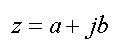
As you can see above, a complex number is composed of a real part, a, and an imaginary part, b. The symbol j in front of b indicates that it is imaginary; though you may have seen this as i in math and physics, engineers use a j because the symbol i is sacrosanct in electrical engineering to represent current. The symbol j itself is a number called the imaginary base and is defined below:
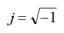
Just as data points in two numbers can be plotted on the Cartesian plane, complex numbers can be plotted on the complex plane. The vertical axis represents the imaginary component and the horizontal axis represents the real component.
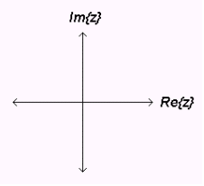
Complex coordinates can be converted to polar coordinates just like ordinary rectangular coordinates. Each complex vector has a phase and magnitude, obtained directly from its rectangular form through straightforward formulas:
| 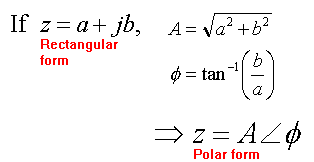 | 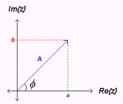 |
Because of Euler's relation, however, complex vectors in polar form can be also represented as complex exponentials:
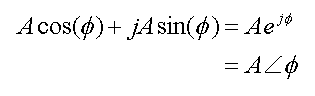
where A*cos(phi) and
A*sin(phi) are the a and
b components, respectively, of the complex number. The complex
exponential form is extremely useful when doing multiplication and division of complex
numbers, shown below. As can be inferred from the above equation, it is also
a very useful way to represent sinusoidal signals.
Below are some examples of arithmetic involving complex vectors. All plots are displayed on a complex plane with the unit circle (| r | = 1 for all angles) marked. Resultant vectors are shown as black arrows in the examples. The following two complex numbers will be used in all examples below. Both the mathematical forms and plots are shown; the red arrow is z1 and the pink arrow is z2 .
| 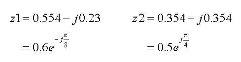 |
| 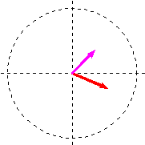 |
To add the vectors, simply sum the two real components together and the two imaginary parts together to get the new real and imaginary components, respectively, of the resultant vector:
| 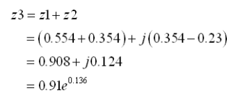 | 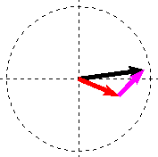 |
Subtraction is done similarly and is left as an exercise to the reader.
Two methods exist for multiplying two complex vectors. The first is to directly multiply the two numbers as binomials:
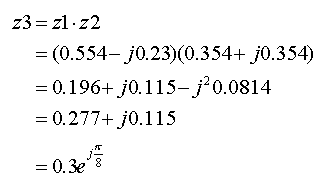
The second way is much more readily done, but requires that the rectangular complex form be converted to polar or complex exponential form before the operation is done (here this has been done for you at the beginning of the examples). When exponentials are multiplied the powers add and the coefficients are multiplied, so the magnitude of the result is simply the product of the two magnitudes and its phase is the addition of the two phases. An example using complex exponentials as well as the resultant plot is shown below:
| 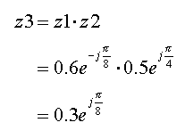 | 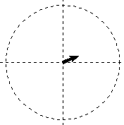 |
Division is done in a similar manner as multiplication. For
the rectangular form the denominator must first be rationalized by multiplying both
itself and the numerator by its conjugate, leaving a real number in the denominator
and a complex number in the numerator.
If complex exponentials are used, the
magnitudes of the polar form are divided instead of multiplied and its phases are
subtracted instead of added. Examples using both methods are shown below:
| 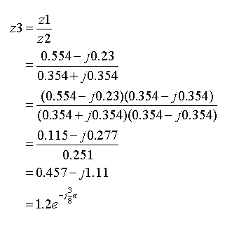 | 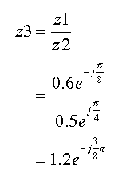 | 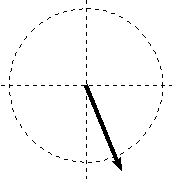 |
Inversion and conjugation are the final two operations on complex vectors explored in this tutorial; they involve only one operand and are both more readily done in polar form than rectangular. Inversion is the well known mathematical process; conjugation was shown above in the division example and involves negating either the phase or the imaginary component of the vector. Examples of both operations are shown below using vector z1 in complex exponential form:
| 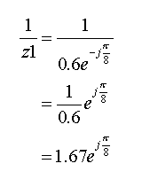 | 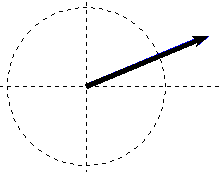 |
| 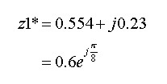 | 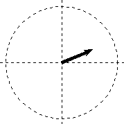 |
Does it all make sense to you? If you are not sure go over it one more time.
If you still do not get it, let me know what is confusing you. Send me by clicking on my name in the Overview section. I want to make this tutorial understandable and any feedback is appreciated!